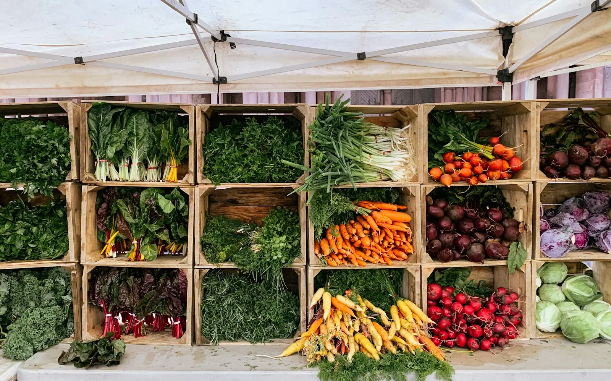

朝どれ野菜・お米・果物
けさ畑にあったものを、
けさ畑にあったものを、
お昼の食卓へ。
家族3人で育てた野菜とお米を、畑の横の小屋で売っています。並ぶのは、その朝に収穫したものだけ。どうしても来られない日は、取り置きや発送も承ります。
直売所は 木・金・土・日9:00〜15:00

いま並んでいるもの（11月ごろ）
今週の直売所
天気と畑の様子で入れ替わります。数が少ないものは、取り置きが確実です。
野菜
大根
寒くなるほど甘みがのってきます。葉つきのまま並べるので、葉も炒め物にどうぞ。
1本 150円〜野菜
白菜
鍋の季節の主役。半分に切ったものもご用意しています。
1玉 250円／半分 130円野菜
さつまいも
収穫後に寝かせて、甘みを引き出してから出しています。焼き芋向き。
1袋（約1kg）350円果物
柿
庭先の古い木からとれる、甘柿。数が少ないので週末は早めに。
1袋（4〜5個）300円お米
新米（コシヒカリ）
今年の秋にとれたお米です。精米したてを2kgから。玄米もあります。
5kg 2,900円
直売所の営業日
木曜から日曜の、朝9時から
月〜水は畑仕事と出荷の日です。売り切れたら早めに閉めることがあります。
- 月休み
- 火休み
- 水休み
- 木営業
- 金営業
- 土営業
- 日営業
1月・2月は土・日のみの営業です。臨時のお休みは、店頭の黒板とこのページでお知らせします。
畑と直売所のこと
数字で見る、おひさま畝
40年間に育てる野菜の種類（品種ちがいを含む）
3家族で手入れしている田んぼと畑（ha）
9:00朝どれを並べ終える時刻
数値は見本用の架空のものです。
来られない日も
取り置きと発送

わたしたちのこと
「近所の畑」でいられるように
店主の祖父の代から、この場所で米と野菜をつくっています。市場に出していたころは、形がそろわない野菜は畑に残すしかありませんでした。
直売所を始めてからは、曲がったにんじんも「味は同じだから」と買ってくださる方が増え、畑で捨てる野菜がずいぶん減りました。これからも、つくる人の顔が見える小さな店でありたいと思っています。
取り置き・発送のご注文は、前日の17時まで
お電話 000-0000-0000（架空）か、フォームからどうぞ。畑に出ている時間は折り返しになります。